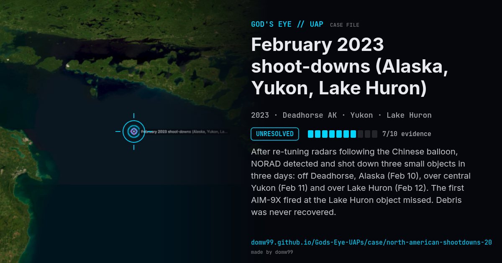

February 2023 shoot-downs (Alaska, Yukon, Lake Huron)
UNRESOLVED

After re-tuning radars following the Chinese balloon, NORAD detected and shot down three small objects in three days: off Deadhorse, Alaska (Feb 10), over central Yukon (Feb 11) and over Lake Huron (Feb 12). The first AIM-9X fired at the Lake Huron object missed. Debris was never recovered.
Explanation
The White House said the three objects were most likely benign commercial or research balloons; none was recovered. An infrared video of the Lake Huron shoot-down was released in 2026 as DOW-UAP-PR071.
What was seen
Shape: Small octagonal / cylindrical objects at 20,000–40,000 ft
Witnesses: NORAD; F-22 and F-16 pilots
Duration: 3 days
Browse
- United States
- 2020s
- Unresolved
- Tracked object events
- Official government documents
- Pilot and aircrew witnesses
- Radar tracking
- Video footage
- Cylinders and cigar shapes